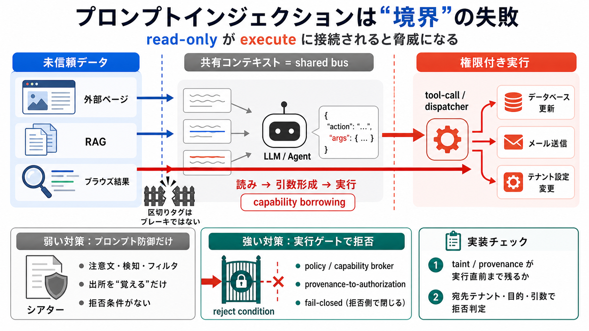

前提
未信頼データが同じ共有領域（context）に入る
日本語：共有バス / 英語：shared bus

プロンプトインジェクションを「モデルがだまされる」ではなく「信頼境界の崩壊＝権限付き書き込みが生まれる失敗」として捉えます。
読み（read）を安全とみなしても、ツール実行（execute）に接続されると脅威になります。
外部ページ等の未信頼テキストがコンテキスト窓に入り、ツール呼び出しの引数形成へ影響すると「読み」が「実行」を誘発し得ます。
境界は「区切りタグ」や「注意書き」ではなく、実行を許可する場所（capability 境界）に置かないと破れます。
（デリミタはシートベルトであってブレーキではない）
未信頼データが「読む経路」から「書き込み経路（ツール引数・選択）」へ接続され、越境した capability が成立します。
モデルが“正しそうな提案”をしても、その結果がツールの権限成立根拠として使われると越境が起きます（confused deputy）。
この議論の一貫した結論は「プロンプト防御・検知は補助で、主戦場は実行ゲート」です。
プロベナンス（出所）をラベル化しても、執行時に拒否へ結び付かなければ「安全の演出」になります。
要約・コンパクションで taint が失われると拒否根拠が弱まり、境界が“紙の上”でしか機能しません。
特に重要なのは実行時（tool-call / dispatcher）で拒否できる境界を作ることです。
注意文・プロンプト改善は「どう言うか」を抑える発想ですが、必要なのは「何をどの権限で許すか」を制御することです。
multi-agent のハンドオフでは、汚染が“テキスト”ではなく“委譲アーティファクト”として権限越境に寄与し得ます。
境界はサマライズ後ではなく、実行直前で強制するのが重要。
最大の強みは実装寄りに問題を再定義して責任分界を明確にする点です。一方、粒度（どの単位まで taint/provenance を保持し拒否するか）や例外運用が未定式化です。
まず「未信頼情報がどのタイミングでツール引数・宛先テナントへ接続されるか」を棚卸しし、次に capability broker の fail-closed 条件（provenance-to-authorization）を検証してください。
（入力原文に具体文献の参照情報が含まれていないため、ここでは参照スライドは省略しました。）
No references found